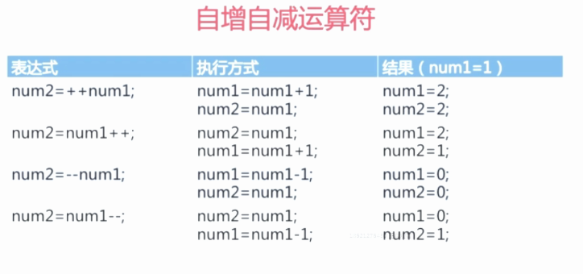
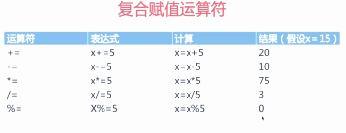
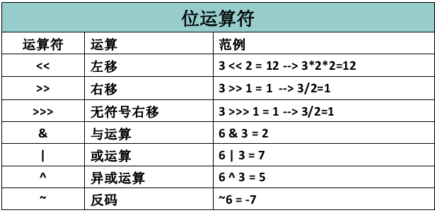
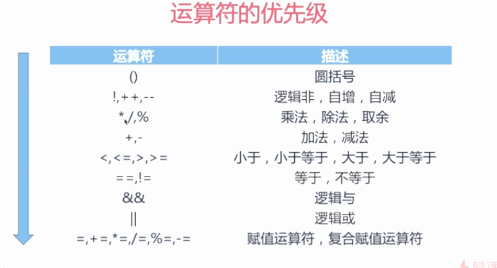

运算符包括:算术,赋值,关系,逻辑,条件,位运算符
一. 算术运算符
自增自减运算

除法运算,如果两个数都是整数,最后结果就是整数； 如果两个数中有一个数是小数,最后结果保留小数.
二. 赋值运算符
将右边的值赋给左边的变量.

三. 关系运算符
关系运算符主要用于条件和循环语句中的判断条件
// 两个字符相比,比较的是两个字符的ASCII值
char a = 'A';
char b = 'B';
System.out.println(a > b); // false
// 浮点数与整数相比,只要值相等,返回的就是true
float f = 5.0f;
long l = 5;
System.out.println(f==l); // true
四. 逻辑运算符
&& 和 || 都是短路运算符
如果第一个表达式的值就能确定表达式的最终结果,那么右边的表达式就不被执行了.
int n = 3;
boolean d = (3>7) && ((n++) < 2);
System.out.println(n); // 3 被短路,后一个表达式没有被执行
System.out.println(d); // false
五. 条件运算符
布尔表达式 ? 表达式1 : 表达式 2
六. 位运算符
位运算是直接对二进制进行运算. 位运算是效率最高的运算

1. 左移/右移
左移数值变大,右移数值变小(右移把有效位挤没了)
以 3 << 2 = 12为例:
右移前:
[高位] |0000-0000 0000-0000 0000-0000 0000-0011| [低位]
右移后 - 挤掉高位,低位补2个0:
[高位] 00|00-0000 0000-0000 0000-0000 0000-001100| [低位]
万能公式
左移: m << n = m * 2^n
右移: m >> n = m / 2^n
>>和 >>> 的区别
右移后,>>最高位补0补1,视情况而定.>>>全部补0
2. 与/或运算 -- & |
将 0 看作假, 1 看作真
# 6 & 3
110
& 011
------
010
# 6 | 3
110
| 011
------
111
3. 异或运算 -- ^
同号(00/11)为假(0),异号(10/01)为真(1)
异或的一个特性: 一个数异或同一个数两次,结果还是那个数 m ^ n ^ n = m
此特性可用于数据加密,n 相当于密钥.
# 计算 7 ^ 4 ^ 4
7(111) 4(100)
111
^100
------
011
^100
-----
111
4. 反码 -- ~
0 变 1；1 变 0
~ 6 = -7
6 的二进制`110`:
[高位] |0000-0000 0000-0000 0000-0000 0000-0110| [低位]
取反码:
[高位] |1111-1111 1111-1111 1111-1111 1111-1001| [低位]
运算符的优先级
